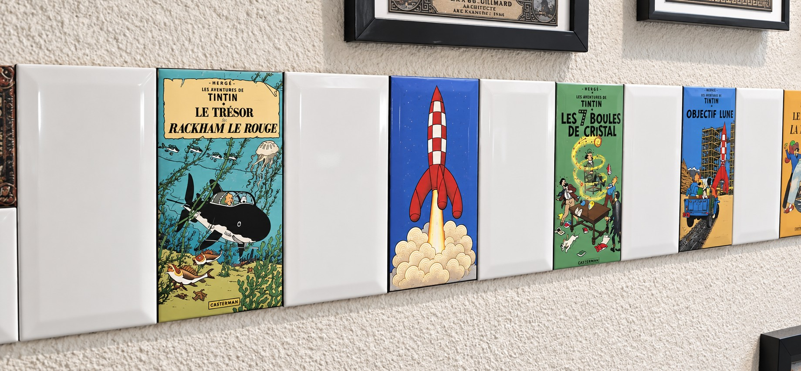
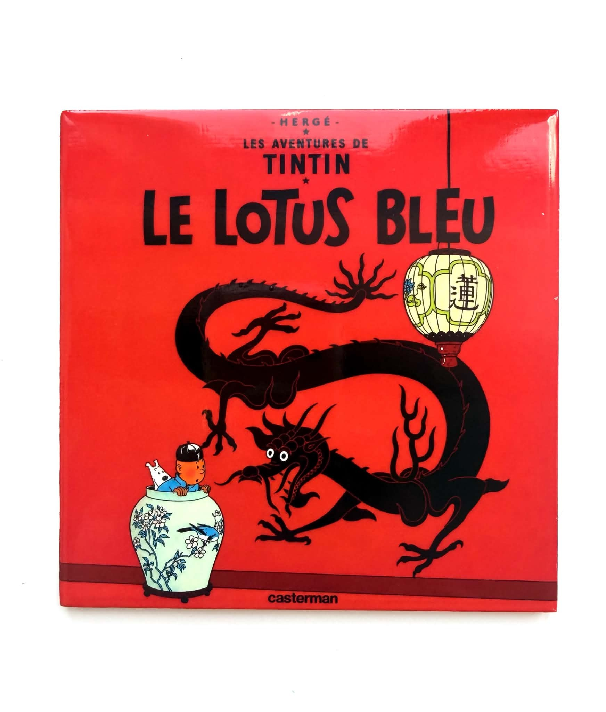
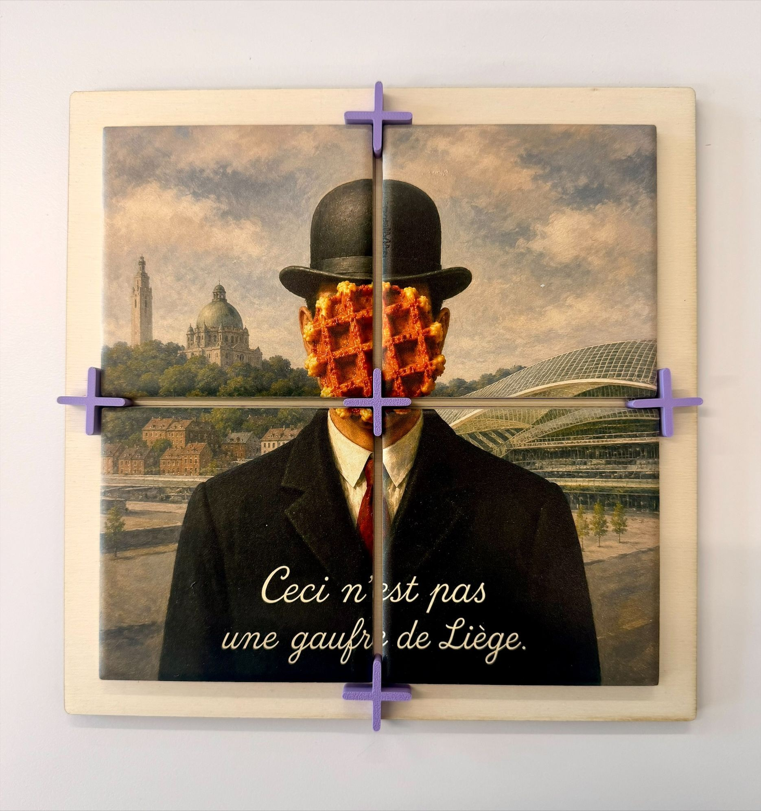
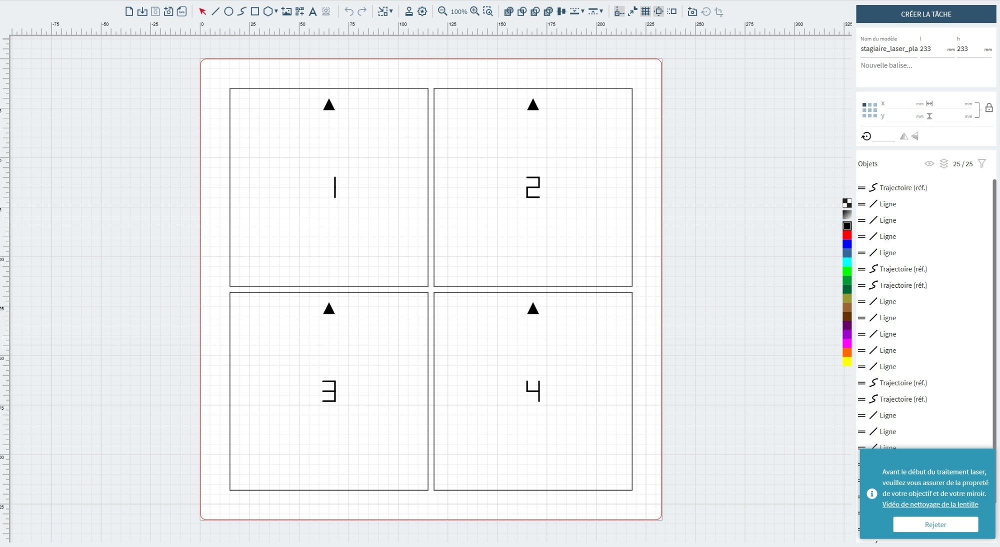
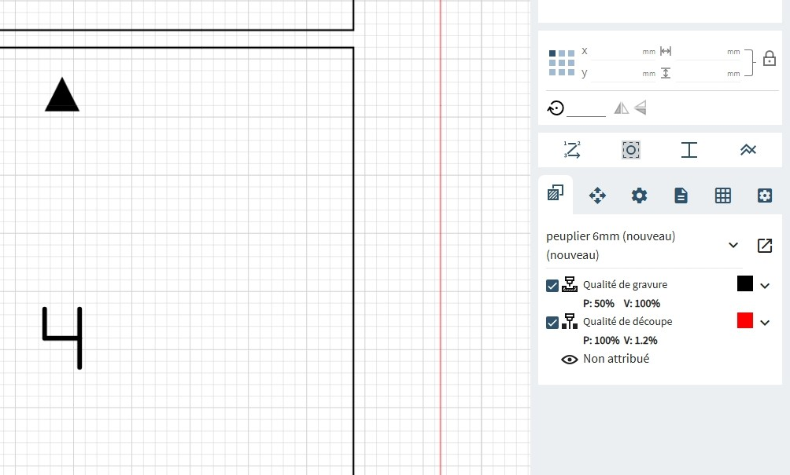

½ journée 03
L'impression UV et le lancement du projet final
Une troisième machine, une troisième façon de fabriquer : cette fois, l'image se dépose directement sur le carreau. Tu vas d'abord faire un essai sur un carreau de test, puis lancer ton projet : une crédence de 4 carreaux que tu composeras toi-même et que tu assembleras la prochaine fois.

À la fin de cette demi-journée, tu seras capable de :
L'impression UV
Jusqu'ici, tu as ajouté de la matière en volume, puis tu vas voir le laser en enlever. L'impression UV fait autre chose encore : elle dépose une encre en surface, sur un support rigide, et la durcit immédiatement avec une lumière ultraviolette.
L'encre ne pénètre pas dans le carreau — elle se fixe dessus. C'est ce qui permet d'imprimer sur de la céramique, du verre, du métal ou du bois.
Un essai avant le vrai
Avant de composer ta crédence, tu fais un essai. L'objectif n'est pas d'obtenir un joli carreau, c'est de voir ce que la machine sait faire avec une image.
Tu prépares ton impression ici :
Impression UV — préparer un support
Tu entres les dimensions de ton carreau, tu choisis et cadres ton image.
Le débord de 2 mm est une sécurité : il n'existe que dans le fichier d'impression, jamais dans le gabarit. Si ton carreau est légèrement décalé, l'image le couvre quand même jusqu'au bord.

De l'écran au carreau
Tu vas composer une crédence de 4 carreaux. Elle sera imprimée sur de vrais carreaux, puis collée sur une plaque découpée au laser. Tu l'assembleras à la prochaine séance.
L'appli te guide en quatre étapes : départ, carreaux, motif, fichiers.
Ce que tu as observé sur ton carreau test vaut pour ta crédence. Une image qui rend mal sur un carreau rendra mal sur quatre.

Comment le laser fabrique ta base
Le laser suit un tracé défini dans un fichier. Il chauffe le matériau jusqu'à le vaporiser localement, exactement là où passe la ligne.
La machine ne devine rien : elle exécute l'action associée à chaque couleur. Sur ce type de machine, la convention est généralement celle-ci — mais ce n'est pas une règle universelle. Selon le logiciel ou l'atelier, les couleurs peuvent être associées à d'autres actions. C'est toujours à vérifier avant de lancer.

Le fichier de la base ouvert dans Rubi : contour en rouge, emplacements numérotés en noir. On voit d'un coup d'œil ce qui sera coupé et ce qui sera marqué.
Ce sont les deux mêmes réglages qui font toute la différence entre couper et marquer.
Ces réglages dépendent aussi du matériau et de son épaisseur. Ils sont préréglés pour l'atelier.

Le panneau des réglages : les deux lignes découpe et gravure, avec leurs valeurs de puissance et de vitesse. Le contraste entre les deux se lit directement.
La procédure complète est disponible dans l'application.